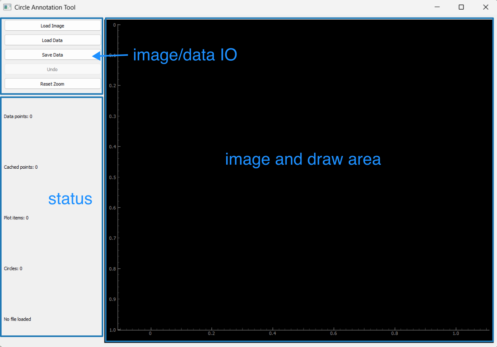

manTrack
A python GUI software that makes modifying circle detection data easier. It allows (i) adding a circle by pressing and dragging and (ii) removing a circle by right-clicking.
Installation
You can install the package via pip:
pip install git+https://github.com/ZLoverty/manTrack.git
Usage
To use the software, you can run the following command in your terminal:
mantrack
You will see a window like this:
{kind=link}
You need to load your image first, then load your preliminary circle detection data. In the draw area, you will see your image overlayed with the detected circles. You can then modify / correct the data by drawing and deleting. It is possible use middle button to zoom in and out. You can save the modified data by clicking the save button.
manTrack.py
Description
A simple python GUI program to for hand labeling of circle objects in images. This program features adding labels by drawing circles at mouse cursor with left button, and deleting labels by right clicking on existing labels. It also features a “undo” button, which reverts undesired edits. It also features loading existing labeling result from .csv files, which allows refining unperfect results from automatic detection algorithm.
The labeling data is a pandas.DataFrame with columns x, y, r.
Edit
Jun 22, 2024:
remove mode module – the add/delete behavior can be separated by using different mouse buttons. Since our data management is no longer dependent on the mode, the mode module requires many more redundant operations and should be thus removed.
use blit to make circle preview faster.
Fix the bug arising from repeatedly clicking “Draw data”.
Cross cursor when labeling.
Jun 23, 2024:
Enable zooming and panning with middle button.
Reorganize the mouse button callbacks: e.g. all the presses can be grouped in the same callback function on_press.
Enable keyboard shortcuts for undo and reset zoom.
July 12, 2024:
Load canvas and axes on start to avoid error.
Sep 16, 2024:
Rewrite the code to use pyqtgraph instead of matplotlib. This allows for more interactive plotting and better performance.
Rename to manTrack.py, use as the main program for manual tracking.
Sep 18, 2024: show file name.
Mar 08, 2025: Package as a module to simplify the setup process.